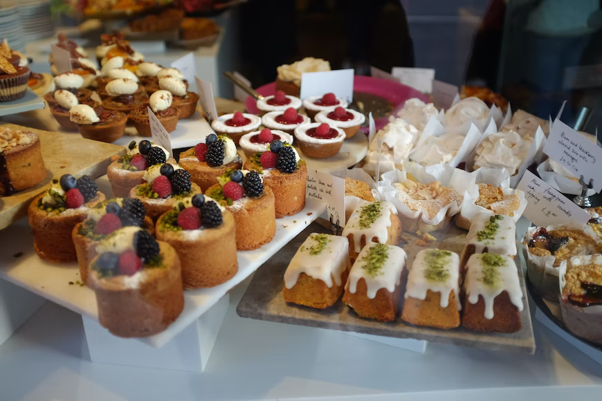
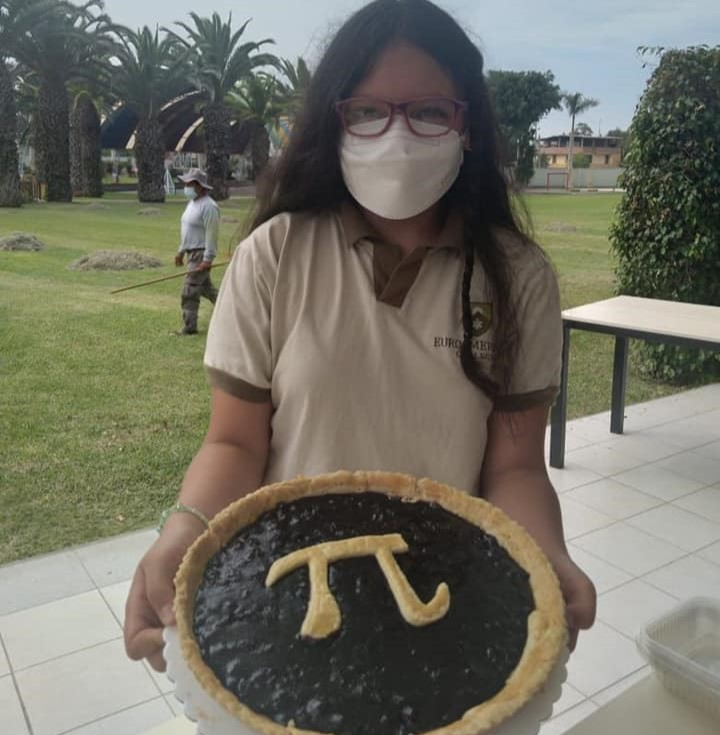
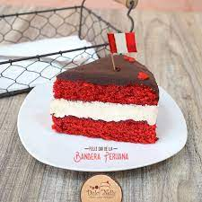
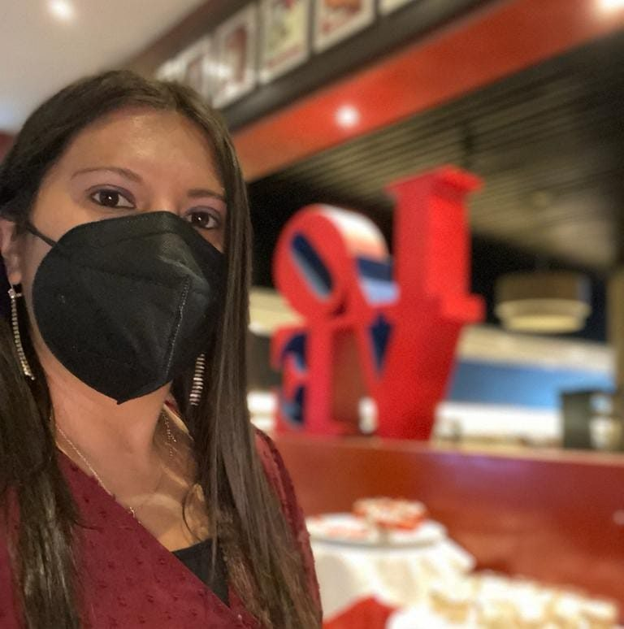

About us and our delicious desserts!
Get to know us better and where these tasty treats come from

Who are we?
Founder Claudia Barrenechea Galli started by baking and preparing desserts for her family. This passion for bringing joy to others through sweets spread to her neighbors and friends. Located in South America, Peru, Claudia's bakery incorporates millenial Andean dessert prepring techniques with modern-day baking.

What are Peruvian desserts?
When people think of Peruvian food, they generally imagine savory dishes, but sweet dishes are very popular. Peruvians have a real sweet tooth and Peruvian desserts are some of the best in Latin America, if not the world. Finish your meal with a sweet dish from South America's culinary capital.

What is our mission?
We strive to provide supreme product and customer experience using quality ingredients and new techniques to create a product truly superior in taste and design. We provide appreciation to each guest for the opportunity to serve them and provide happiness and joy through the art of desserts.